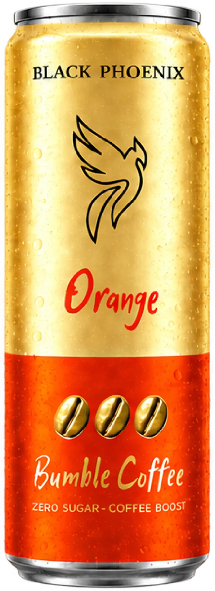
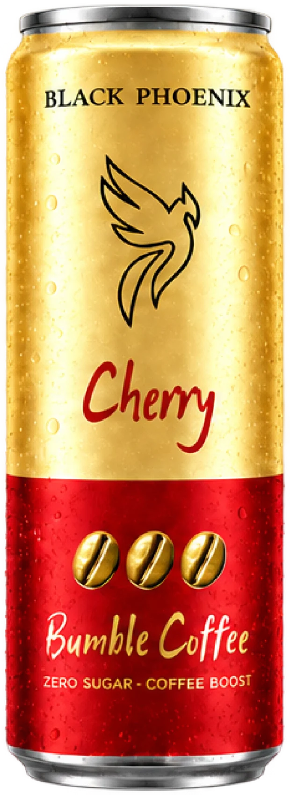
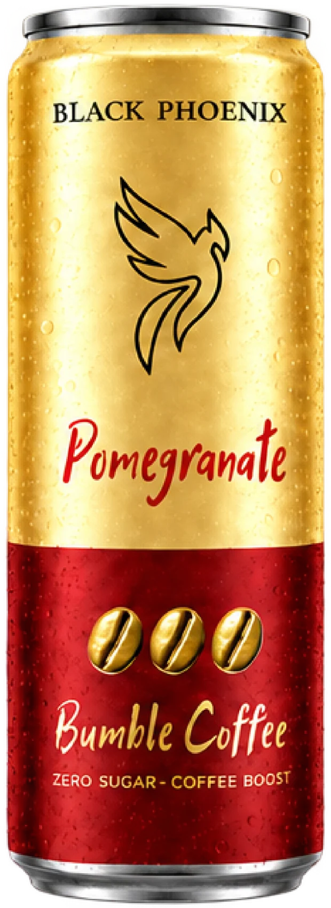
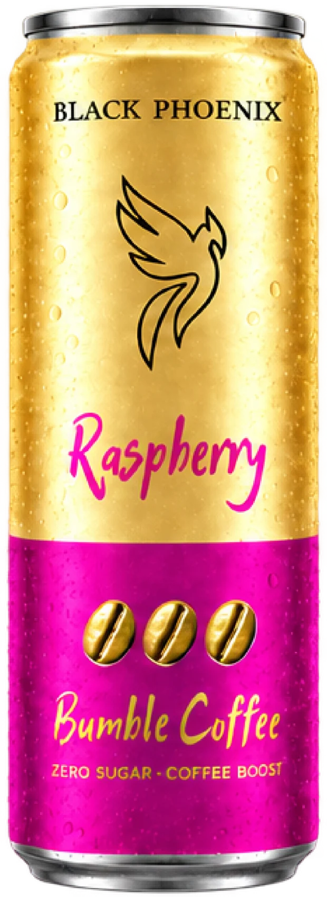
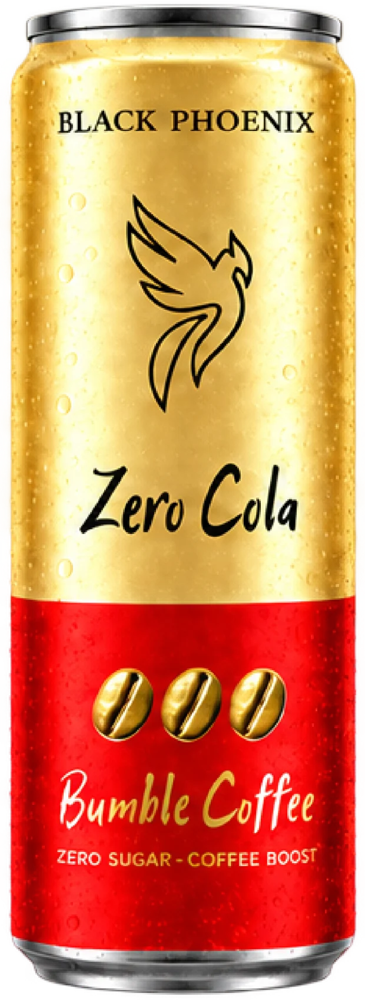
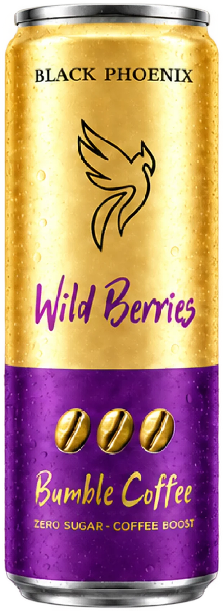

ЧТО ВНУТРИ
BUMBLE?
КОФЕ.
ГАЗ.
НОЛЬ САХАРА.
СОК.
ROBUSTA
01 · КОФЕЙНАЯ БАЗА
125
02 · МГ КОФЕИНА
0%
03 · САХАРА
SPARKLING
04 · ЛЁГКАЯ ГАЗАЦИЯ






ROBUSTA · 125 МГ · 0% САХАРА · СОК · SPARKLING
БОДРИТ КАК КОФЕ.
ОСВЕЖАЕТ КАК ГАЗИРОВКА.
BUMBLE COFFEE